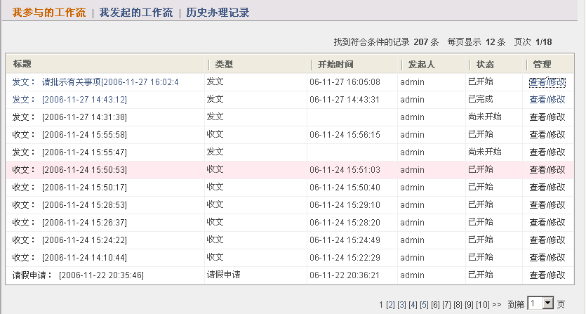
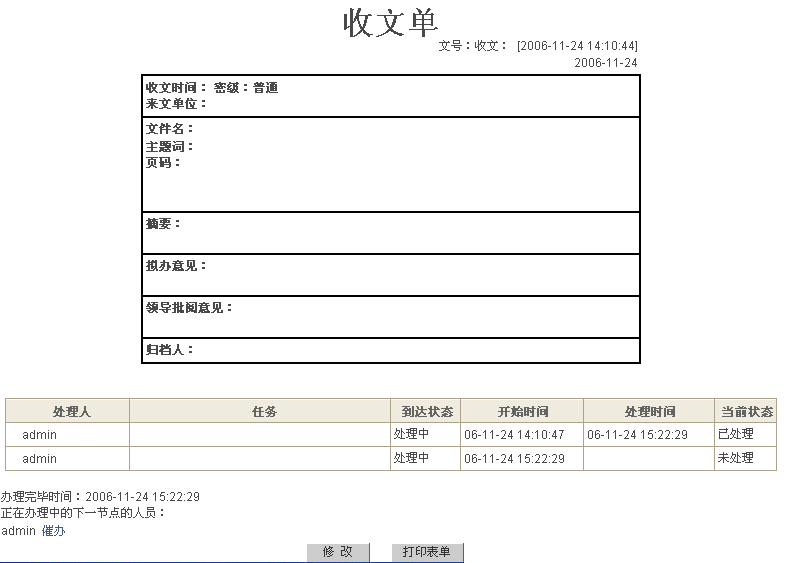

我的流程
“工作流”下的“我的流程”用于查看/修改“我参与的工作流”、“我发起的工作流”和“历史办理记录”。

图 1
点击“查看/修改”，如下图，可以显示详细表单和处理信息，以及修改和打印表单。

图 2
点击“修改”可修改流程名称。
催办
1. 进入左侧功能菜单 行政管理→工作流→我的流程 →历史办理记录→查看
2. 若下一节办理人员还未处理，将会现示，办理人员。点击“催办”，以短消息形式发给下一节办理人员。